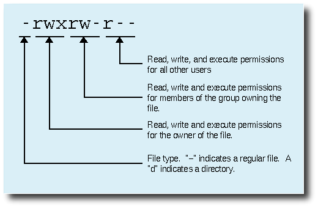
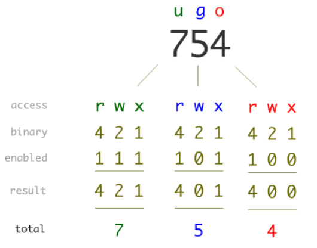
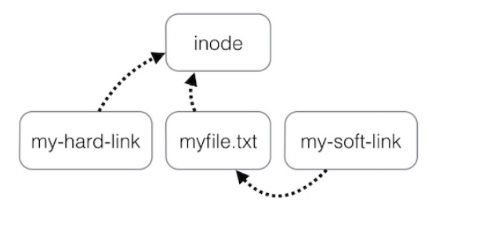

class: center, middle # ОС Практикум --- ## putty: ssh 62.44.100.23 --- # Преговор cd, pwd, mkdir, touch, cp, rm, mv, sudo, su, ls /etc/passwd /bin Абсолютен път, релативен път. Какво беше ., .., ~, -? --- # Обем на файловете # df, du От упражнения, помните ли какво правят? --- # df Показва свободното място на файловите системи. Ако не му е подаден аргумент, показва на всички mount-нати файлови системи. Иначе може да му подадем файл - например file1 - и да видим колко е свободното място на файловата система, която съдържа този файл. Аргументи: * -t typefs * -h * -T --- Аргументи: * -t typefs - филтрира според ФС, която подадем * -h - human readable * -T - добавя и типа ФС, когато ги изписва --- # du disk usage Показва колко място заемат файлове и рекурсивно за директории. Подава му са файл или файлове разделени със space, или директории. Показва за всеки файл на отделен ред колко е голям в килобайти. du за директория изкарва за всяка пряка поддиректория колко е голяма и за текущата (коя е текущата?) колко е голяма. --- du . 19228 ./лекции 164 ./лекции-записки 22420 . Но ако искаме за директорията да изкараме не само поддиректориите, а всички изобщо файлове вътре: -a, --all write counts for all files, not just directories --- Какво прави du -c? Вижте man страницата и опитайте. --- du -c изкарва total място --- Задача: Избройте поне 2 команди, с които да видите размерите на файловете в /bin. Копирайте най-големия файл от тези, намиращи се в /bin, в home директорията си. --- ls . -l du . -a ls . -Sl --- # Owners and groups Някой помни ли какво бяха те? --- Всеки файл се асоциира със собственик и група. Променят се с chown и chgroup. chown може и за двете. chown root file chgroup student file chown :student --- Какво бихте направили, ако искате цялата директория и всичко вътре в нея да стане за даден user? --- Рекурсивно, за да сменяме всички файлове навътре в една директория: chown -R someuser:somegroup some_dir/ --- # Permissions  1. Някой помни ли как да видим за даден файл тези permissions? 1. Какво значат? 1. Как да ги сменим? Наричат се security “mode”, могат да се променят по различни начини. --- #chmode * подаваме му u, g и о или комбинация от тях. или пропускаме, което значи, че имаме предвид и трите. * после +, -, = * \+ добавяне на permission * \- премахване * = направо казваме какво да е * r, w, x или комбинация от тях. chmod o+x xyz.txt // добавя executable права на others (запазва каквото е било за другите две user and group) --- Какво правят следните? chmod ugo-rwx xyz.txt chmod ug+rw,o-x abc.mp4 --- Задача: Копирайте secret.txt от /tmp/os2018/02/ в home директорията си. Прочетете го с командата cat. --- sudo chmod +r secret.txt cat secret.txt --- # chmode  Някой може ли да обясни? --- chmod ugo+rwx [file_name] chmod 777 [file_name] --- Задача: Създайте файл permissions.txt в home директорията си. За него дайте единствено - read права на потребителя създал файла, write and exec на групата, read and exec на всички останали. Направете го и с битове, и чрез “буквички” --- chmod u=r,g=wx,o=rx [file_name] chmod 435 [file_name] --- # Hard links, symlinks  * Hard-links, are just like files. They're just an additional pointer directly to an inode. * Symbolic-links are separate files (including separate inode and data) that store a filesystem path to a file. --- # Работа с текстови файлове cat, more, less, head, tail, tail -f tail, head -n номер редове --- Задача: Създайте symlink на файла /etc/passwd в home директорията ви (да се казва например passwd_symlink). Да се направи файл във вашата home директорията с username-а на 42-ия потребител в списъкa с потребители и вместо да прочете passwd от etc, прочетете symlink-a. --- За хората, които знаят pipes: Moжете ли да копирате 10-е най-големи файла от /bin в home директорията си с една команда? --- # find Много мощна команда! Може да прави куп неща! Аргументи -name : намира файловете по име -iname : намира файловете по име, игнорира главни и малки букви -type f : намира само файлове -type d : намира само директории -size : намира по размер -mtime : намира по модифицирано време Например: find /home/SI -name s… -type d Ако не искаме да е с цялото име: find . -name s* -type d find . -name “*.jpg” Да открием файловете по-големи от 1GB: find ~/Movies -size +1024M --- Задача: Намерете файловете в /bin, които могат да се четат, пишат и изпълняват от всички --- find /bin -perm 777 --- # Да правим нещо с файловете, веднъж като сме ги намерили -exec {} as placeholder for matched file find . -exec ls '{}' \; find . -exec ls '{}' \+ --- ls file1 ls file2 ls file3 или ls file1 file2 file3 --- Задача: Копирайте всички файлове от /bin, които могат да се четат, пишат и изпълняват от всички, в bin2 директория в home директорията ви. Направете такава, ако нямате. --- find /bin -perm 777 -exec cp '{}' ~/bin2 \; --- Задача: от предната задача: когато вече сте получили home/../../bin2 с команди, архивирайте всички команди вътре, които започват с b в архив, който се казва b_start.tar. (командата, която архивира е tar -c -f <файл1> <файл2>...) Можете ли да направите архив на всеки? --- find . -name 'b*' Архив с всички: find . -name 'b*' -exec tar -c -f b_start.tar {} + Архив на всеки: find . -name 'b*' -exec tar -c -f '{}.tar' {} \;